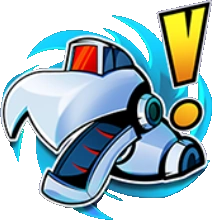
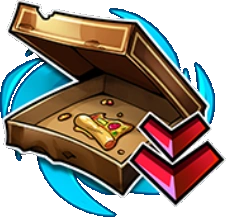

TMNT: Splintered Fate – Portals
The Portals of Power are always offered in the first rooms of each level. Other portals offered during the run are random.

Portal of Power
Increased veteran and champion enemies.
+15% increased Enemy damage and Health.
+10% Dragon and Dreamer Coins this run.
Declining a Portal will stop more from appearing this run.

Portal of Greater Power
Increased veteran and champion enemies.
+15% increased Enemy damage and health.
+10% Dragon and Dreamer Coins this run.
Portal of Immense Power
Increased veteran and champion enemies.
+15% increased Enemy damage and health.
+10% Dragon and Dreamer Coins this run.
Portal of Ultimate Power
Increased veteran and champion enemies.
+15% increased Enemy damage and health.
+10% Dragon and Dreamer Coins this run.
Portal of Lead Feet
Dash count reduced by 1 (1 dash minimum). 50% longer dash cooldown
+10% Dragon and Dreamer Coins this run.
Portal of Mediocrity
-50% Special recharge rate
+10% Dragon and Dreamer Coins this run.
Portal of Mice
All MOUSERs self destruct.
+10% Dragon and Dreamer Coins this run.
Portal of Pacing
Enemies move and strike faster.
+10% Dragon and Dreamer Coins this run.
Portal of Paupers
Shops are twice as expensive.
+10% Dragon and Dreamer Coins this run.
Portal of Perforated Pockets
Lose 5 Scrap whenever you take damage
+10% Dragon and Dreamer Coins this run.
Portal of Plundered Pizza
Healing is half as effective.
+10% Dragon and Dreamer Coins this run.
Portal of Pocket Change
Carry a max of 500 Scrap.
+10% Dragon and Dreamer Coins this run.
Portal of Projection
Hostile attacks and area effects are larger.
+10% Dragon and Dreamer Coins this run.
Portal of Protection
Enemy health is fully converted to shielding.
+10% Dragon and Dreamer Coins this run.
Portal of Rust
-50% Tool recharge rate
+10% Dragon and Dreamer Coins this run.
Portal of Scarcity
Reduce the number of Turtle Power and Upgrade options by 2.
+10% Dragon and Dreamer Coins this run.

Portal of Stolen Slices
Pizza no longer appears after bosses
+10% Dragon and Dreamer Coins this run.
Portal of Storms
Lightning Storms are more frequent and more dangerous.
+10% Dragon and Dreamer Coins this run.
Portal of the Foot
Foot Clan enemies deal 35% increased damage.
+10% Dragon and Dreamer Coins this run.